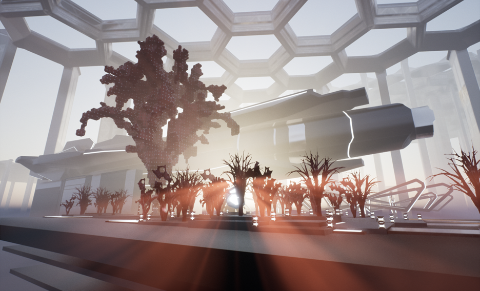
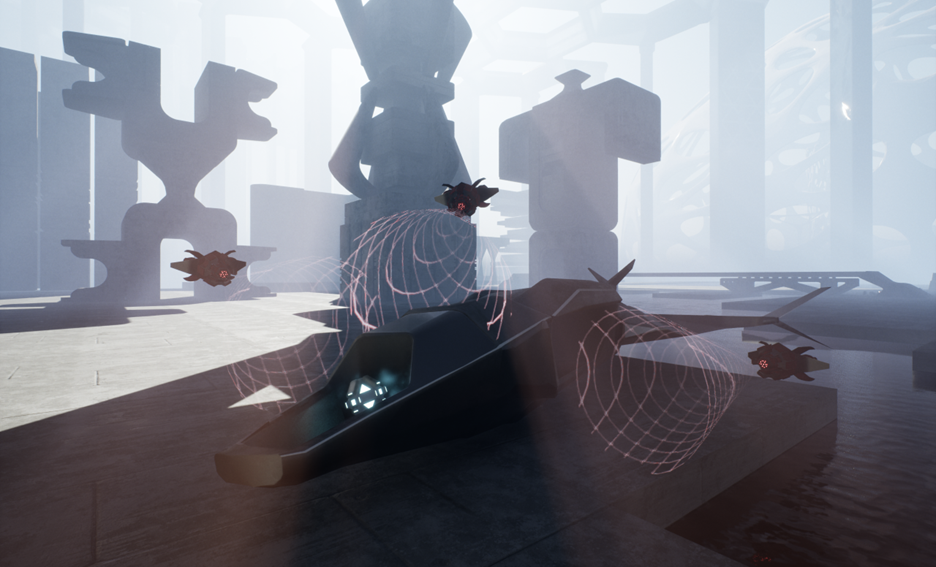
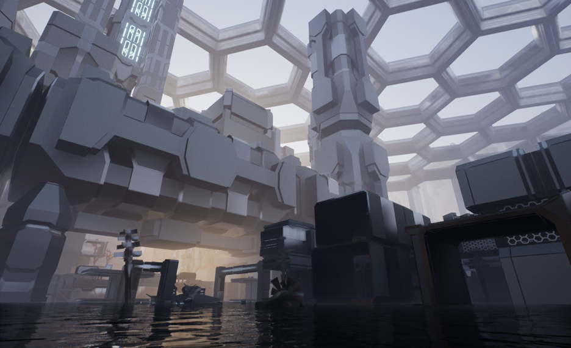
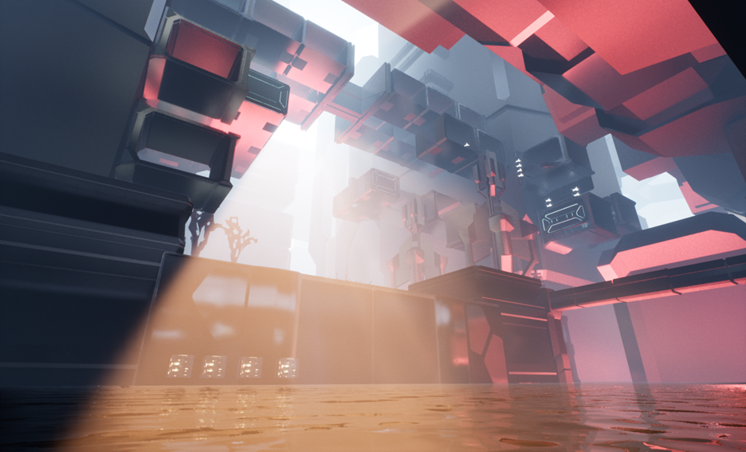
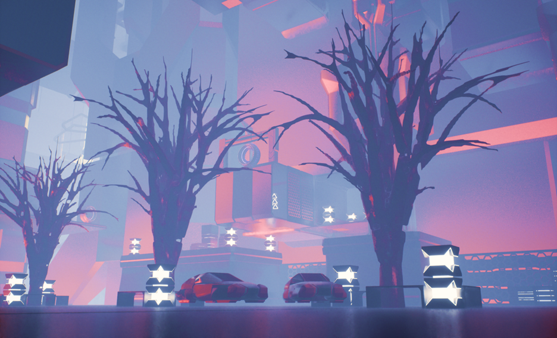
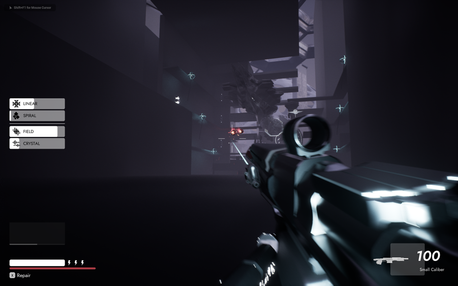
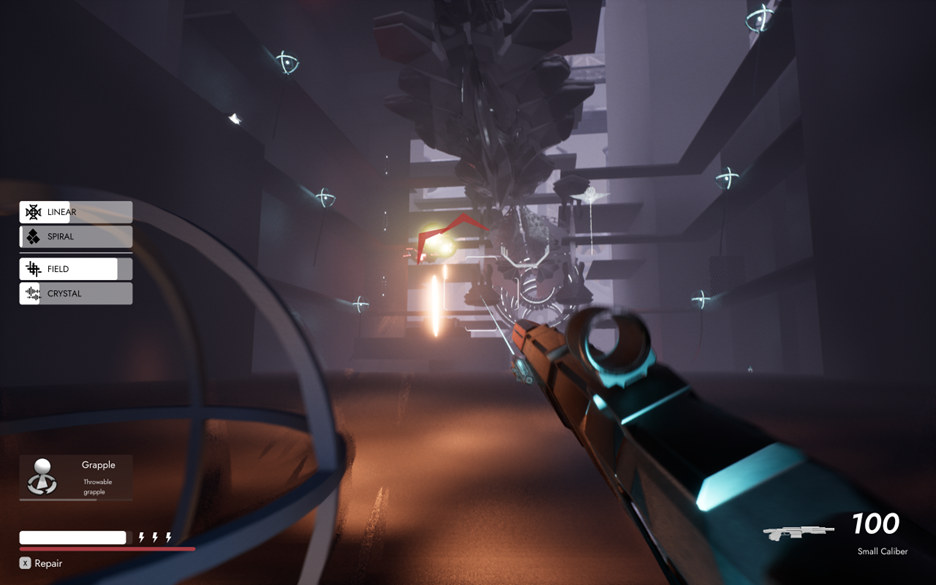
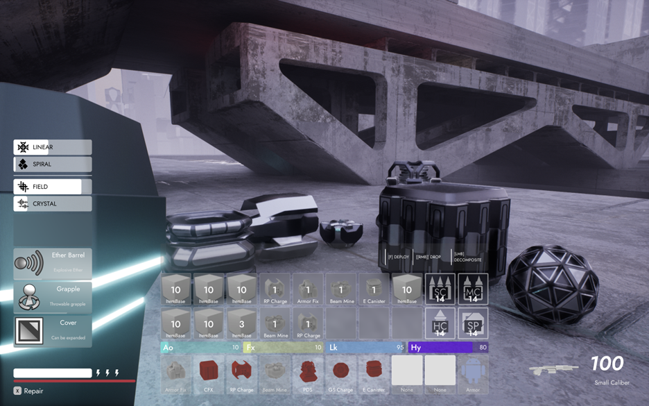
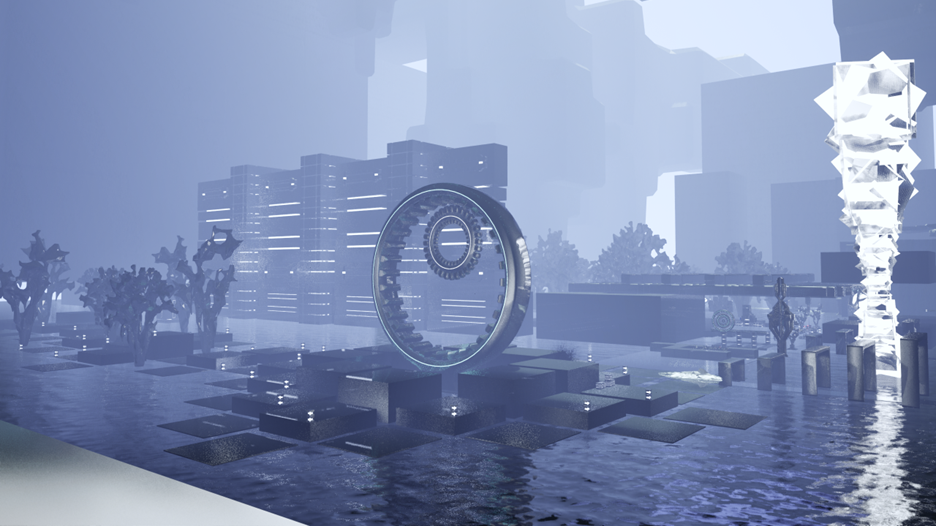
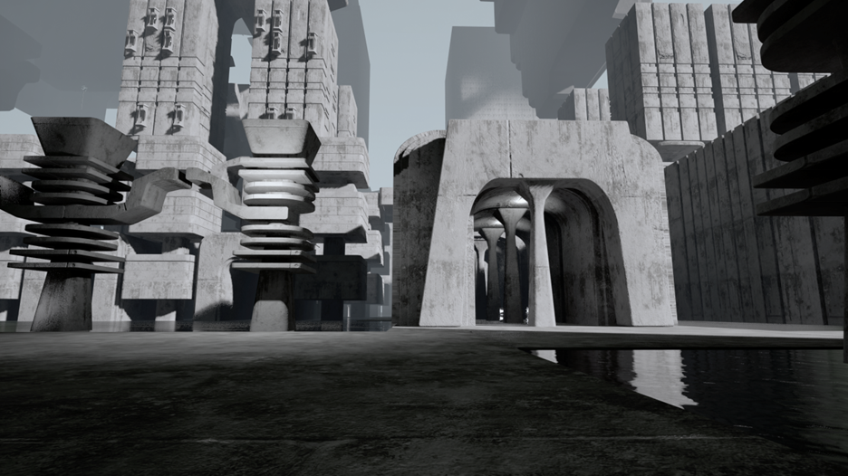

2024
Noryea, the massive project I have been working on, is an open-world First Person extraction shooter setting a mystical land. In Noryea, players are allowed the freedom to interact with the many factions and influencers of theis new-found continent. The gameplay involves first person combat, platforming, exploration and recources management.


Creating intelligent ally and enemy NPCs for Noryea using an integrated approach of behavior tree and symbolic reasoning.

By utilizing the lumen global illumination and reflections, the exotic world of Noryea is filled with fantastic lighting and dreamy vues.

Using Blender script and geometry nodes, a procedural generator is built to create the unique look of Norian buildings.

The levels of Noryea are planned and prototyped with based on oriented multi graph to enable complex but organized exploration routes.

A simulation approach for creating the first person weapons and arm animation using UE5's chaos physics system that integrates pose transitioning, procedural recoil and firing animation, and hit reactions while maintaining a smooth, collision-accurate feel.

Player character in Noryea is equipped with a responsive and flexible movement system that reads and interacts with the environment and player input. The abilities of dashing, mantling, wall-running enables makes movement fun and flexible.

In Noryea, a slot-based inventory system enables the player to store, move and manipulate objects. A crafting menu able allows the player to quickly produce essential supplies using scraps of resources they found in the environment.

Noryea is a giant world that runs smoothly by using procedural world chunk loading. The world is loaded and unloaded dynamically as the player traverse in it, allowing the game to run smoothly.
Norian creatures are designed with a special organic and biomimicry language.

Different regions in Noryea have their own distinct architectural identity. The world of Noryea features Brutalist, Googie, Modern, and Googie styled architectures.